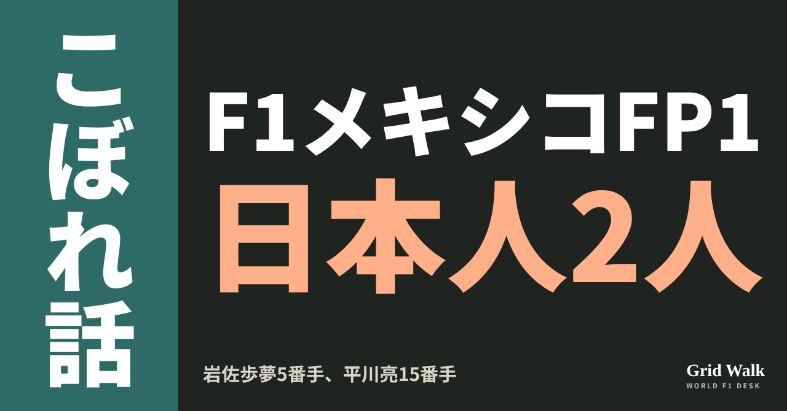
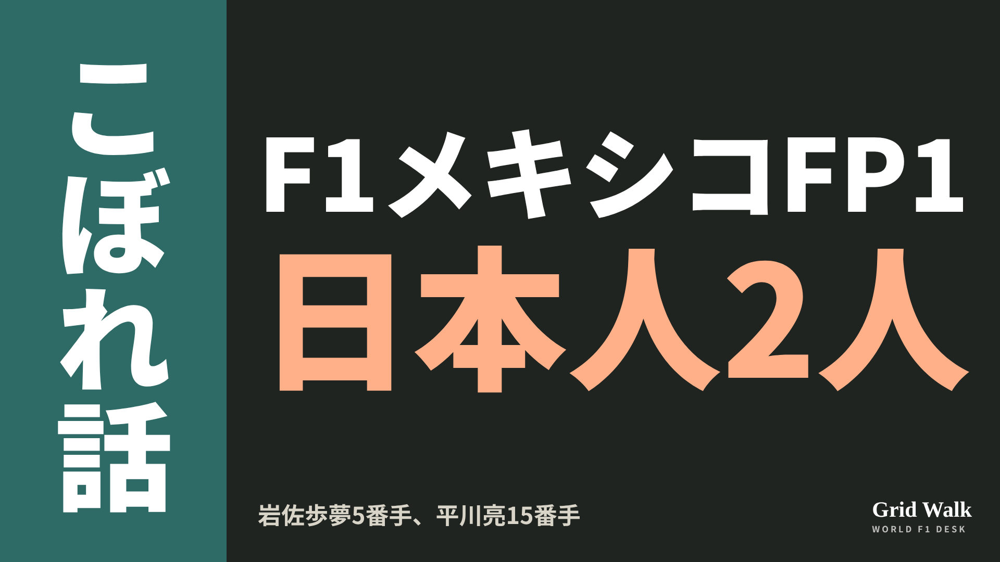
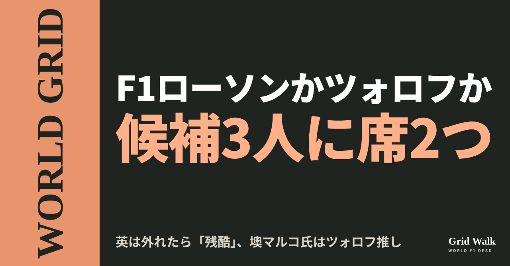
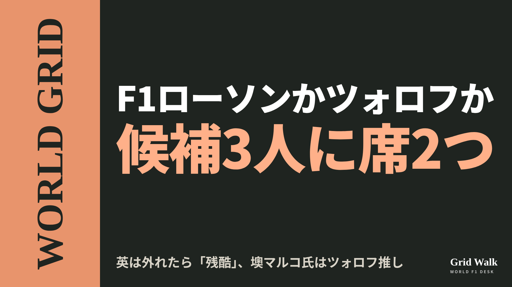
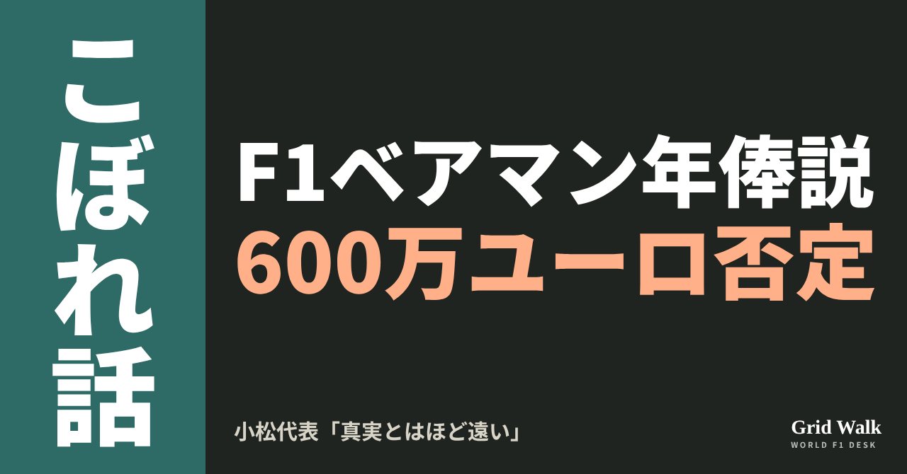
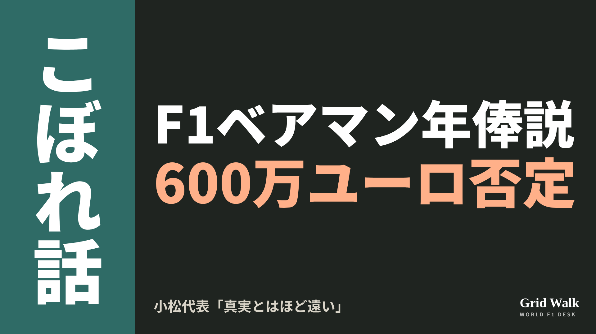

<meta charset="utf-8"><title>10/31夕方のコラム note貼り付け</title>
<style>
/* one column of numbered paste steps; text steps vs image steps differ by marker */
:root{--bg:#F5F4F0;--card:#FFFFFF;--ink:#1D2321;--mute:#5F665F;--line:#DCDAD2;--btn:#1F5FBF;--btnok:#2E8B4F;--img:#E9F3EC;--imgink:#22663B;--sans:'IBM Plex Sans JP','Hiragino Sans','Noto Sans JP',sans-serif}
@media (prefers-color-scheme:dark){:root:not([data-theme="light"]){--bg:#171A19;--card:#202423;--ink:#ECEDE8;--mute:#A3AAA2;--line:#343937;--btn:#4D8BE6;--btnok:#3FA866;--img:#1E2C23;--imgink:#8FD3A6;color-scheme:dark}}
:root[data-theme="dark"]{--bg:#171A19;--card:#202423;--ink:#ECEDE8;--mute:#A3AAA2;--line:#343937;--btn:#4D8BE6;--btnok:#3FA866;--img:#1E2C23;--imgink:#8FD3A6;color-scheme:dark}
body{background:var(--bg);color:var(--ink);font-family:var(--sans);font-size:15px;line-height:1.75;padding:20px 16px 60px}
main{max-width:680px;margin:0 auto;display:grid;gap:28px}
header h1{font-size:22px;margin:0 0 6px;text-wrap:balance}
header p{margin:0;color:var(--mute);font-size:14px}
nav{display:flex;gap:8px;flex-wrap:wrap;margin-top:12px}
nav a{border:1px solid var(--line);border-radius:999px;padding:4px 14px;color:var(--ink);text-decoration:none;font-size:14px;background:var(--card)}
.part h2{font-size:18px;line-height:1.5;margin:0 0 12px;text-wrap:balance;display:flex;gap:10px;align-items:baseline;flex-wrap:wrap}
.tag{font-size:13px;background:var(--ink);color:var(--bg);border-radius:6px;padding:1px 9px}
.steps{list-style:none;margin:0;padding:0;display:grid;gap:12px}
.st{background:var(--card);border:1px solid var(--line);border-radius:12px;padding:12px;min-width:0}
.hd{display:flex;align-items:center;gap:8px;margin-bottom:8px}
.no{width:26px;height:26px;border-radius:50%;background:var(--btn);color:#fff;display:inline-flex;align-items:center;justify-content:center;font-size:13px;font-weight:700;flex:0 0 26px}
.im .no{background:var(--btnok)}
.hd em{font-style:normal;font-size:12px;background:var(--img);color:var(--imgink);border-radius:6px;padding:0 8px}
.bx{font-size:13.5px;line-height:1.7;border:1px solid var(--line);border-radius:8px;padding:8px 10px;max-height:110px;overflow:auto;overflow-wrap:anywhere}
.bx.tall{max-height:150px}.bx p{margin:0 0 6px}.bx h2{font-size:14px;margin:8px 0 4px}.bx a{color:var(--btn)}
.st img{display:block;width:100%;max-width:100%;border:1px solid var(--line);border-radius:8px}
.sub{font-size:12.5px;color:var(--mute);margin:6px 0 0}
.cp{width:100%;margin-top:8px;padding:12px;border:0;border-radius:10px;background:var(--btn);color:#fff;font:600 15px var(--sans);cursor:pointer}
.cp.ok{background:var(--btnok)}.cp.dl{background:var(--btnok)}.cp:focus-visible{outline:3px solid var(--ink);outline-offset:2px}
.xh{font-size:15px;margin:20px 0 10px}
.fb{font-size:13px;line-height:1.7;margin:8px 0 0;padding:8px 10px;border-radius:8px;background:var(--img);color:var(--imgink)}
.opts{display:grid;grid-template-columns:repeat(auto-fill,minmax(240px,1fr));gap:10px}
.opt{min-width:0}.opt img{display:block;width:100%;border:1px solid var(--line);border-radius:8px}
.ol{display:flex;align-items:center;gap:8px;margin-top:6px}.ol b{font-size:13px;flex:0 0 auto}.ol .on{font-size:12.5px;color:var(--mute);flex:1;min-width:0}.ol .cp{width:auto;flex:0 0 auto;padding:9px 14px}.ol .cp{margin:0;padding:9px}
.toast{font-size:13px;color:var(--mute);margin-top:6px}
</style>
<main><header><h1>10/31夕方のコラム note貼り付け</h1><p>いま公開済みは3本です。青い番号は文章、緑は画像です。</p><nav><a href="#p1">1</a><a href="#p2">2</a><a href="#p3">3</a></nav></header><section class="part" id="p1"><h2><span class="tag">OFF GRID</span>岩佐歩夢5番手、平川亮15番手　F1メキシコFP1に日本人2人</h2><p class="sub">サイトに公開：16:39</p><ol class="steps">
<li class="st im"><div class="hd"><span class="no">1</span><b>見出し画像</b><em>画像</em></div><button class="cp dl" data-img="img/iwasa-hirakawa-mexico-fp1-20261031.png" data-name="iwasa-hirakawa-mexico-fp1-20261031_見出し画像.png">ダウンロード</button></li>
<li class="st"><div class="hd"><span class="no">2</span><b>タイトル</b></div><div class="bx" id="p1t">岩佐歩夢5番手、平川亮15番手　F1メキシコFP1に日本人2人</div><button class="cp" data-plain="p1t">タイトルをコピー</button></li>
<li class="st"><div class="hd"><span class="no">3</span><b>本文</b></div><div class="bx tall" id="p1r"><p>現地10月30日（金）、メキシコシティGPのフリー走行1回目（FP1）で、日本人が2人走りました。マックス・フェルスタッペンの車に乗った岩佐歩夢（レッドブル）が5番手、エステバン・オコンの車に乗った平川亮（ハース）が15番手です（F1公式）。</p><p>結果の元の記事と、ルーキーのFP1の回数をまとめた解説へのリンクはサイトで → <a href="https://f1gridwalk.github.io/lens/iwasa-hirakawa-mexico-fp1-20261031/?utm_source=note&amp;utm_campaign=iwasa-hirakawa-mexico-fp1-20261031">https://f1gridwalk.github.io/lens/iwasa-hirakawa-mexico-fp1-20261031/?utm_source=note&amp;utm_campaign=iwasa-hirakawa-mexico-fp1-20261031</a></p><h2>ルーキー10人の中で2番目</h2><p>このFP1では、11チームのうち10チームがレギュラーのドライバーを休ませて、ルーキーを走らせました。いつもの2人で走ったのはフェラーリだけです（F1公式）。</p><p>ルーキーでいちばん速かったのは、ジョージ・ラッセルの車に乗ったフレデリック・ベスティ（メルセデス）で、全体の3番手。岩佐はその次で、1分19秒113。トップのシャルル・ルクレール（フェラーリ）とは0.985秒差でした（GPblog）。</p><p>motorsport.com 日本版によると、2セット目に多くの車がソフトタイヤを選ぶなか、岩佐はミディアムタイヤを履いてこのタイムを出しました。同じ記事は、ミディアムを履いたドライバーの中では最速だったと伝えています。</p><p>もう1台のレッドブルのアイザック・ハジャーは11番手で、岩佐とは0.432秒差でした（GPblog の結果表から計算）。ただ、GrandPrix.com によると、ハジャーは序盤にパワーユニットの問題でピットまで惰性で戻り、長くガレージにいました。周回数は岩佐が23周、ハジャーが21周でした。</p><p>岩佐の今季のFP1は、バルセロナ、オーストリア、イタリアに続いて4回目です（F1公式）。</p><h2>平川は30周を走った</h2><p>平川のタイムは1分19秒982で、トップとは1.854秒差（GPblog）。ルーキーの中では5番目でした。周回数は30周で、トップのルクレール（29周）より1周多く、22人の中でも多いほうでした。30周以上を走ったのは9人で、平川は5番目タイです（autosport web の結果表）。</p><p>平川の今季のFP1は、オーストリア、ハンガリーに続いて3回目です（F1公式）。車を譲ったオコンは、週末を前にハースが出したプレビューで、こう話していました。</p><blockquote><p>「今週は、リョウの次の予定のセッションのためにFP1を休む。だから金曜の朝は、いつもと少し違うものになる。でも、反対側からセッションを見て、フィードバックがデータとどうつながるかを見るのは、いつも面白い」（オコン、ハースのプレビュー〔Pitpass掲載〕／イギリス）</p></blockquote><p>ルーキーのFP1の決まりと、チームごとの回数は、DEEP「ルーキーのFP1は、なぜ『1台に2回』なのか」（ https://f1gridwalk.github.io/deep/rookie-fp1/ ）にまとめています。</p><h2>順位だけでは比べられないけれど</h2><p>FP1は、車ごとに積んでいる燃料の量や、試している内容が違います。順位だけで速さを比べることはできません。編集部としては、それでもルーキー10人の中で2番目という岩佐の結果は、motorsport.com 日本版が伝えたとおりミディアムでのタイムなら、限られた1時間をうまく使えた形だと見ています。平川も、30周と距離を積めた1時間だったと見ています。</p><p>岩佐はこのあと、スーパーフォーミュラの王座争いに戻ります。決着は11月21日と22日の鈴鹿です（コラム https://f1gridwalk.github.io/lens/iwasa-ohta-suzuka-20261027/ ）。</p><p><strong>岩佐のミディアムでの5番手と、平川の30周。今回のFP1で、より印象に残ったのはどちらですか？</strong></p><p>━━━━━━━━━━</p><p><strong>F1 Grid Walk では、世界のF1ニュースを毎日日本語でまとめています。</strong></p><p>海外の記事の要約を、毎日載せています。</p><p><a href="https://f1gridwalk.github.io/">https://f1gridwalk.github.io/</a></p><p>ほかの海外記事も読みたい方は、F1 Grid Walkへ。</p><p><a href="https://f1gridwalk.github.io/lens/iwasa-hirakawa-mexico-fp1-20261031/">https://f1gridwalk.github.io/lens/iwasa-hirakawa-mexico-fp1-20261031/</a></p><p>━━━━━━━━━━</p><p><a href="https://www.formula1.com/en/latest/article/fp1-leclerc-leads-antonelli-in-mexico-city-as-new-faces-make-formula-1-debuts.5IkozqYxX25QgmGJqc0NlA">出典：F1公式サイト（イギリス）</a></p><p><a href="https://www.formula1.com/en/latest/article/which-rookie-drivers-are-getting-fp1-outings-at-the-mexico-city-grand-prix.7rCPdOEOjnSiAOM8SjUAsB">出典：F1公式サイト（イギリス）</a></p><p><a href="https://www.gpblog.com/en/breaking-news/ferrari-begins-mexico-city-weekend-strong-as-leclerc-leads-antonelli">出典：GPblog（オランダ）</a></p><p><a href="https://www.grandprix.com/races/mexican-gp-2026-practice-1-report.html">出典：GrandPrix.com（イギリス）</a></p><p><a href="https://jp.motorsport.com/f1/news/f1-2026-rd19-mexicocity-fp1-detail-report/10869775/">出典：motorsport.com 日本版（日本）</a></p><p><a href="https://www.as-web.jp/f1/1368373">出典：autosport web（日本）</a></p><p><a href="https://www.pitpass.com/83945/Mexico-City-Grand-Prix-Preview-Haas">出典：Pitpass（ハースのプレビュー）（イギリス）</a></p></div><button class="cp" data-rich="p1r">本文をコピー</button></li>
<li class="st"><div class="hd"><span class="no">4</span><b>ハッシュタグ</b></div><div class="bx" id="p1h">#F1 #F1jp #岩佐歩夢 #平川亮 #レッドブル #ハース #メキシコシティGP #FP1 #F1こぼれ話 #OFFGRID</div><button class="cp" data-plain="p1h">タグをコピー</button></li>
</ol><h3 class="xh">X</h3><ol class="steps">
<li class="st im"><div class="hd"><b>X用の画像</b><em>画像</em></div><button class="cp dl" data-img="img/x_iwasa-hirakawa-mexico-fp1-20261031.png" data-name="x_iwasa-hirakawa-mexico-fp1-20261031.png">ダウンロード</button></li>
<li class="st"><div class="hd"><b>① noteをシェアするときの文</b></div><div class="bx" id="p1x0">F1メキシコFP1に日本人が2人。フェルスタッペンの車に乗った岩佐歩夢は5番手、ハースの平川亮は15番手でした。海外の伝え方と走りの中身をnoteにまとめました #F1jp #岩佐歩夢 #平川亮</div><button class="cp" data-plain="p1x0">コピー</button></li>
<li class="st"><div class="hd"><b>② ①への返信</b></div><div class="bx" id="p1x1">ほかの海外記事も読みたい方は、F1 Grid Walkへ。
https://f1gridwalk.github.io/lens/iwasa-hirakawa-mexico-fp1-20261031/?utm_source=x&amp;utm_campaign=iwasa-hirakawa-mexico-fp1-20261031</div><button class="cp" data-plain="p1x1">コピー</button></li>
<li class="st"><div class="hd"><b>③ ②への返信</b></div><div class="bx" id="p1x2">毎日の海外F1ニュースは、日本語でこちらにまとめています。
https://f1gridwalk.github.io/</div><button class="cp" data-plain="p1x2">コピー</button></li>
</ol></section><section class="part" id="p2"><h2><span class="tag">WORLD GRID</span>ローソンが外れたら「とても残酷」と英　墺マルコ氏はツォロフ推し</h2><p class="sub">サイトに公開：17:00</p><ol class="steps">
<li class="st im"><div class="hd"><span class="no">1</span><b>見出し画像</b><em>画像</em></div><button class="cp dl" data-img="img/lawson-tsolov-seat-20261031.png" data-name="lawson-tsolov-seat-20261031_見出し画像.png">ダウンロード</button></li>
<li class="st"><div class="hd"><span class="no">2</span><b>タイトル</b></div><div class="bx" id="p2t">ローソンが外れたら「とても残酷」と英　墺マルコ氏はツォロフ推し</div><button class="cp" data-plain="p2t">タイトルをコピー</button></li>
<li class="st"><div class="hd"><span class="no">3</span><b>本文</b></div><div class="bx tall" id="p2r"><p>レーシングブルズの2027年の2席に、候補は3人。リアム・ローソン、アービッド・リンドブラッド、F2のニコラ・ツォロフです。イギリスでは解説者が、ローソンとリンドブラッドが来年乗っていなかったら「とても残酷」と話し、オーストリアではヘルムート・マルコ氏がツォロフを推し、オランダではメキシコのレースの後にはっきりする、という話が出ました。</p><p>3つの国の伝え方の違いと、元の記事へのリンクはサイトで → <a href="https://f1gridwalk.github.io/lens/lawson-tsolov-seat-20261031/?utm_source=note&amp;utm_campaign=lawson-tsolov-seat-20261031">https://f1gridwalk.github.io/lens/lawson-tsolov-seat-20261031/?utm_source=note&amp;utm_campaign=lawson-tsolov-seat-20261031</a></p><h2>候補は3人、席は2つ</h2><p>10月9日のRacingNews365によると、アラン・パーメイン代表は2027年のドライバーを「数週間のうちに」決めると話し、日付は示さないまま、こう認めました。</p><blockquote><p>「3人は、もちろん2席には収まりません」（アラン・パーメイン代表、RacingNews365／オランダ）</p></blockquote><p>ローソンは77点でドライバーズランキング9位、リンドブラッドは38点で11位です（F1公式）。ツォロフはいまF2で2位、首位のラファエル・カマラとは7点差です（FIA）。</p><p>そこへ今週末、金曜のFP2でローソンとフェルスタッペンが接触し、2人とも1グリッド降格になりました（RACER）。</p><h2>イギリス：外れたら「とても残酷」</h2><p>イギリスのSky Sports F1で、ローソンは席を守るだけのことをしたかと聞かれたマーティン・ブランドルは、こう答えました（RacingNews365が伝えたもの）。</p><blockquote><p>「そうだと思うでしょう？」「でもこの世界では、誰かが外されるからチャンスが来る」「でも、来年あの2台にリアム・ローソンとアービッド・リンドブラッドが乗っていなかったら、とても残酷に思えるでしょう」（マーティン・ブランドル、Sky Sports F1／イギリス）</p></blockquote><p>マルコ氏がツォロフを推していると向けられると、こうも話しました。</p><blockquote><p>「上がってくる若手には、ミスをするための息をつく余裕が必要だと思います。でも、そう、ツォロフが扉をたたいています」（マーティン・ブランドル、Sky Sports F1／イギリス）</p></blockquote><h2>オーストリア：マルコ氏「スターを作る」</h2><p>そのマルコ氏は、昨季の終わりにレッドブルのモータースポーツ顧問を退いています（RacingNews365）。マルコ氏はオーストリアの新聞クローネの取材でツォロフを推した、とGPFansが伝えました。引いたのは、亡くなったレッドブルの共同創業者、ディートリッヒ・マテシッツの言葉です。</p><blockquote><p>「マテシッツの言葉に賛成です。『スターは買わない、スターを作る』」「この考え方からすれば、レーシングブルズでのリアム・ローソンとニコラ・ツォロフの難しい決断は、本来ツォロフの側に傾くべきです」（ヘルムート・マルコ氏、クローネ／オーストリア、GPFans経由）</p></blockquote><p>この発言は、GPblogが10月22日に「マルコ、ローソンとツォロフのどちらを選ぶべきかをはっきりさせる」という見出しで伝えていました。1週間後の29日、GPFansは同じ言葉を「マルコ、ローソンに新たな打撃」という見出しで載せています。</p><h2>オランダ：メキシコのレースの後</h2><p>オランダのGPFansは30日、「レーシングブルズが期限を明かす」という見出しを立てました。ただ中身はチームの発表ではなく、放送局Viaplayでのファン・コルデンホーフェン氏の話です。</p><blockquote><p>「彼はロックスターのような見た目もしていて、レッドブルの中では、みんなニコラ・ツォロフにとても感心しています」「リアム・ローソンは選手権で9位です」「普通なら、チームは来年に向けて本当に新しい契約を出すべきだと思うでしょう」「でもツォロフには、みんなものすごく感心していて、ぜひ上げて席を与えたいと思っています」（ファン・コルデンホーフェン氏、Viaplay／オランダ、GPFans経由）</p></blockquote><blockquote><p>「僕が聞いているのは、このレースの後、つまりメキシコのレースの後に、はっきりするということです」「それが日曜の夜なのか、月曜、火曜、水曜なのかは、わかりません」（ファン・コルデンホーフェン氏、Viaplay／オランダ、GPFans経由）</p></blockquote><p>編集部としては、イギリスはいまの2人への公平さ、オーストリアはレッドブルの育て方、オランダは決まる日に目を向けていると見ています。チームの言葉としてはっきりしているのは、まだ「数週間のうちに」決めるということだけです。これまでの報道とFP2の裁定の要約はサイトにあります（https://f1gridwalk.github.io/news/nl-racingnews365-lawson-racing-bulls-2027-seat/ 、https://f1gridwalk.github.io/news/nl-racingnews365-verstappen-lawson-stewards/ ）。</p><p><strong>あなたなら、2027年のレーシングブルズの2台に、誰を乗せますか？</strong></p><p>━━━━━━━━━━</p><p><strong>F1 Grid Walk では、世界のF1ニュースを毎日日本語でまとめています。</strong></p><p>海外の記事の要約を、毎日載せています。</p><p><a href="https://f1gridwalk.github.io/">https://f1gridwalk.github.io/</a></p><p>ほかの海外記事も読みたい方は、F1 Grid Walkへ。</p><p><a href="https://f1gridwalk.github.io/lens/lawson-tsolov-seat-20261031/">https://f1gridwalk.github.io/lens/lawson-tsolov-seat-20261031/</a></p><p>━━━━━━━━━━</p><p><a href="https://racingnews365.com/liam-lawson-facing-cruel-racing-bulls-scenario-as-f1-future-speculation-grows">出典：RacingNews365（オランダ）</a></p><p><a href="https://www.gpfans.com/en/f1-news/1092098/helmut-marko-liam-lawson-racing-bulls-verdict-2027-tsolov/">出典：GPFans（イギリス）</a></p><p><a href="https://www.gpblog.com/en/news/marko-makes-clear-who-racing-bulls-should-pick-between-lawson-and-tsolov">出典：GPblog（オランダ）</a></p><p><a href="https://www.gpfans.com/nl/f1-nieuws/1092210/racing-bulls-onthult-deadline-voor-keuze-voor-lawson-of-tsolov/">出典：GPFans（オランダ語版）（オランダ）</a></p><p><a href="https://racingnews365.com/racing-bulls-provide-updated-timeline-as-liam-lawson-awaits-f1-future-decision">出典：RacingNews365（オランダ）</a></p><p><a href="https://racer.com/2026/10/30/verstappen-and-lawson-hit-with-grid-penalties-for-mexico-city-gp-practice-clash">出典：RACER（アメリカ）</a></p><p><a href="https://www.formula1.com/en/results/2026/drivers">出典：F1公式（イギリス）</a></p><p><a href="https://api.fia.com/events/formula-2-championship/season-2026/standings">出典：FIA（フランス）</a></p></div><button class="cp" data-rich="p2r">本文をコピー</button></li>
<li class="st"><div class="hd"><span class="no">4</span><b>ハッシュタグ</b></div><div class="bx" id="p2h">#F1 #F1jp #ローソン #ツォロフ #リンドブラッド #レーシングブルズ #ヘルムートマルコ #メキシコシティGP #F1移籍 #WORLDGRID</div><button class="cp" data-plain="p2h">タグをコピー</button></li>
</ol><h3 class="xh">X</h3><ol class="steps">
<li class="st im"><div class="hd"><b>X用の画像</b><em>画像</em></div><button class="cp dl" data-img="img/x_lawson-tsolov-seat-20261031.png" data-name="x_lawson-tsolov-seat-20261031.png">ダウンロード</button></li>
<li class="st"><div class="hd"><b>① noteをシェアするときの文</b></div><div class="bx" id="p2x0">レーシングブルズの2027年、候補3人に席は2つ。英ではブランドルが、ローソンが外れたら「とても残酷」。墺ではマルコ氏がツォロフを推しました。国ごとの見方をnoteにまとめました #F1jp #ローソン</div><button class="cp" data-plain="p2x0">コピー</button></li>
<li class="st"><div class="hd"><b>② ①への返信</b></div><div class="bx" id="p2x1">ほかの海外記事も読みたい方は、F1 Grid Walkへ。
https://f1gridwalk.github.io/lens/lawson-tsolov-seat-20261031/?utm_source=x&amp;utm_campaign=lawson-tsolov-seat-20261031</div><button class="cp" data-plain="p2x1">コピー</button></li>
<li class="st"><div class="hd"><b>③ ②への返信</b></div><div class="bx" id="p2x2">毎日の海外F1ニュースは、日本語でこちらにまとめています。
https://f1gridwalk.github.io/</div><button class="cp" data-plain="p2x2">コピー</button></li>
</ol></section><section class="part" id="p3"><h2><span class="tag">OFF GRID</span>ベアマン600万ユーロ説、小松代表「真実とはほど遠い」</h2><p class="sub">サイトに公開：17:01</p><ol class="steps">
<li class="st im"><div class="hd"><span class="no">1</span><b>見出し画像</b><em>画像</em></div><button class="cp dl" data-img="img/komatsu-bearman-rumours-20261031.png" data-name="komatsu-bearman-rumours-20261031_見出し画像.png">ダウンロード</button></li>
<li class="st"><div class="hd"><span class="no">2</span><b>タイトル</b></div><div class="bx" id="p3t">ベアマン600万ユーロ説、小松代表「真実とはほど遠い」</div><button class="cp" data-plain="p3t">タイトルをコピー</button></li>
<li class="st"><div class="hd"><span class="no">3</span><b>本文</b></div><div class="bx tall" id="p3r"><p>メキシコシティGPの金曜、ハースの小松礼雄代表が、強い言葉を続けました。オリバー・ベアマンが年俸600万ユーロを求めている、という話について「インスタグラムか何かで見たのが最初です」「真実とはほど遠い」。さらに、マイアミでエステバン・オコンと口論したという噂も「真実はまったくのゼロ」と打ち消しました。</p><p>元の記事4本と、ベアマン本人の木曜の発言の要約へのリンクはサイトで → <a href="https://f1gridwalk.github.io/lens/komatsu-bearman-rumours-20261031/?utm_source=note&amp;utm_campaign=komatsu-bearman-rumours-20261031">https://f1gridwalk.github.io/lens/komatsu-bearman-rumours-20261031/?utm_source=note&amp;utm_campaign=komatsu-bearman-rumours-20261031</a></p><h2>「600万ユーロ」は初耳</h2><p>ベアマンの2027年の契約は、まだ発表されていません。イギリスのロイターによると、その遅れの理由として、ベアマンが年俸600万ユーロを求めているという話が一部で出ていました。F1公式サイトによると、小松代表は金曜のチーム代表会見でこの噂について聞かれ、こう答えています。</p><blockquote><p>「この600万ユーロという数字を誰が言い出したのか、わかりません。インスタグラムか何かで見たのが最初です」「コメントすることはありません。真実とはほど遠いからです」（小松礼雄代表、GPblog／オランダ）</p></blockquote><p>話は、うわさが広がる仕組みにも及びました。</p><blockquote><p>「火のないところに煙は立たない、と言う人もいます。でも、本当に話を作り上げる人がいるんです」「今の時代、みんなが出どころを確かめないのは驚きです」（小松礼雄代表、F1公式サイト／イギリス）</p></blockquote><blockquote><p>「『よし、もっとクリックが欲しい』と。それで、そういう話を切り貼りして、どんどん広げていくんです」（小松礼雄代表、ロイター／イギリス）</p></blockquote><h2>マイアミの口論も「ゼロ」</h2><p>小松代表は、今季ほかにも同じようなことがあったと話し、マイアミの件にも触れました。</p><blockquote><p>「マイアミで、私がエステバン（オコン）と口論したらしいという件。あれは、真実はまったくのゼロです」「内部の情報を持っていると言っていた人たちも含めて、まったくのでたらめです」（小松礼雄代表、F1公式サイト／イギリス）</p></blockquote><p>マイアミの件は、5月にも2人がそろって否定していました。アメリカのRACERは5月、小松代表が「マイアミでは、エステバンと口論のひとつもしていません」と否定し、オコンも「正直、全部作り話です」と話したと伝えていました。オコンは今季限りでハースを離れ、2027年はラファエル・カマラが後任に決まっています（F1公式サイト）。</p><h2>契約は「きっとそうなる」</h2><p>では、ベアマンとの契約はどうなっているのか。小松代表は「何が引っかかっているのか、詳しくは話せないと思います」としたうえで、こう話しました。</p><blockquote><p>「オリーの側も私たちの側も、一緒に続けたいということは、とてもはっきりしています」「来年も一緒にやる解決策を探しているところで、きっとそうなると思います」（小松礼雄代表、ロイター／イギリス）</p></blockquote><p>ロイターによると、ベアマンは昨年のメキシコシティGPで4位に入り、ハースのF1での最高成績に並んでいます。ベアマン本人が木曜に話した内容は、サイトのニュース要約（https://f1gridwalk.github.io/news/en-crash-bearman-haas-2027/）で読めます。発表が遅れている事情は、10月27日の WORLD GRID コラム（https://f1gridwalk.github.io/lens/bearman-haas-contract-20261027/）でも取り上げました。</p><p>交渉の中身は話さず、外に出た数字とマイアミの口論の噂ははっきり否定し、噂の広がり方には苦言を呈した形です。正式な発表がいつになるかは、まだ分かっていません。</p><p><strong>ベアマンの契約の発表、いつごろ出ると思いますか？</strong></p><p>━━━━━━━━━━</p><p><strong>F1 Grid Walk では、世界のF1ニュースを毎日日本語でまとめています。</strong></p><p>海外の記事の要約を、毎日載せています。</p><p><a href="https://f1gridwalk.github.io/">https://f1gridwalk.github.io/</a></p><p>ほかの海外記事も読みたい方は、F1 Grid Walkへ。</p><p><a href="https://f1gridwalk.github.io/lens/komatsu-bearman-rumours-20261031/">https://f1gridwalk.github.io/lens/komatsu-bearman-rumours-20261031/</a></p><p>━━━━━━━━━━</p><p><a href="https://www.gpblog.com/en/news/haas-boss-hits-back-at-bearman-contract-rumors-absolute-nonsense">出典：GPblog（オランダ）</a></p><p><a href="https://www.formula1.com/en/latest/article/absolute-nonsense-komatsu-refutes-bearmans-salary-demand-is-the-reason-for-haas-contract-delay.68hjHnOBePhQXhTccJ5eJP">出典：F1公式サイト（イギリス）</a></p><p><a href="https://krro.com/2026/10/30/motor-racing-haas-boss-komatsu-lashes-out-at-nonsense-bearman-salary-rumours/">出典：ロイター（KRRO）（イギリス）</a></p><p><a href="https://racer.com/2026/05/21/komatsu-ocon-blast-bull-reports-about-the-pair-falling-out">出典：RACER（アメリカ）</a></p></div><button class="cp" data-rich="p3r">本文をコピー</button></li>
<li class="st"><div class="hd"><span class="no">4</span><b>ハッシュタグ</b></div><div class="bx" id="p3h">#F1 #F1jp #ベアマン #小松礼雄 #ハース #オコン #メキシコシティGP #F1移籍 #F1こぼれ話 #OFFGRID</div><button class="cp" data-plain="p3h">タグをコピー</button></li>
</ol><h3 class="xh">X</h3><ol class="steps">
<li class="st im"><div class="hd"><b>X用の画像</b><em>画像</em></div><button class="cp dl" data-img="img/x_komatsu-bearman-rumours-20261031.png" data-name="x_komatsu-bearman-rumours-20261031.png">ダウンロード</button></li>
<li class="st"><div class="hd"><b>① noteをシェアするときの文</b></div><div class="bx" id="p3x0">ベアマンが年俸600万ユーロを求めているという話に、ハースの小松代表は「真実とはほど遠い」。マイアミでのオコンとの口論の噂も否定しました。noteにまとめました #F1jp #ベアマン</div><button class="cp" data-plain="p3x0">コピー</button></li>
<li class="st"><div class="hd"><b>② ①への返信</b></div><div class="bx" id="p3x1">ほかの海外記事も読みたい方は、F1 Grid Walkへ。
https://f1gridwalk.github.io/lens/komatsu-bearman-rumours-20261031/?utm_source=x&amp;utm_campaign=komatsu-bearman-rumours-20261031</div><button class="cp" data-plain="p3x1">コピー</button></li>
<li class="st"><div class="hd"><b>③ ②への返信</b></div><div class="bx" id="p3x2">毎日の海外F1ニュースは、日本語でこちらにまとめています。
https://f1gridwalk.github.io/</div><button class="cp" data-plain="p3x2">コピー</button></li>
</ol></section></main><script>
function done(b,msg){const t=b.dataset.t||b.textContent;b.dataset.t=t;b.classList.add('ok');b.textContent=msg||'コピーしました';setTimeout(()=>{b.classList.remove('ok');b.textContent=t},2000)}
function selectEl(el){const r=document.createRange();r.selectNodeContents(el);const s=getSelection();s.removeAllRanges();s.addRange(r)}
async function rich(el,b){
  try{await navigator.clipboard.write([new ClipboardItem({'text/html':new Blob([el.innerHTML],{type:'text/html'}),'text/plain':new Blob([el.innerText],{type:'text/plain'})})]);done(b);return}catch(e){}
  selectEl(el);let ok=false;try{ok=document.execCommand('copy')}catch(e){}
  if(ok){getSelection().removeAllRanges();done(b)}else{done(b,'選択しました。コピーしてください')}}
async function plain(el,b){
  try{await navigator.clipboard.writeText(el.innerText);done(b);return}catch(e){}
  selectEl(el);let ok=false;try{ok=document.execCommand('copy')}catch(e){}
  if(ok){getSelection().removeAllRanges();done(b)}else{done(b,'選択しました。コピーしてください')}}
let dlns=null;(async()=>{try{dlns=await window.claude?.use?.("downloads")}catch(e){dlns=null}})();
async function img(src,b){
  b.dataset.t=b.dataset.t||b.textContent;
  if(!dlns){try{dlns=await window.claude?.use?.("downloads")}catch(e){}}
  if(!dlns){b.textContent='ダウンロードできませんでした';setTimeout(()=>{b.textContent=b.dataset.t},3500);return}
  try{const blob=await fetch(src).then(r=>r.blob());b.textContent='保存の確認を開いています…';
    await dlns.save({filename:b.dataset.name,data:blob});done(b,'ダウンロードしました')}
  catch(e){const c=e&&e.code;b.textContent=c==='declined'?'キャンセルしました':c==='rate_limited'?'少し待ってからもう一度押してください':'ダウンロードできませんでした';setTimeout(()=>{b.textContent=b.dataset.t},3500)}}
document.querySelectorAll('.cp').forEach(b=>b.addEventListener('click',()=>{
  if(b.dataset.rich)rich(document.getElementById(b.dataset.rich),b);
  else if(b.dataset.plain)plain(document.getElementById(b.dataset.plain),b);
  else img(b.dataset.img,b)}));
</script>